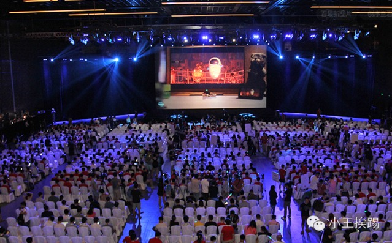
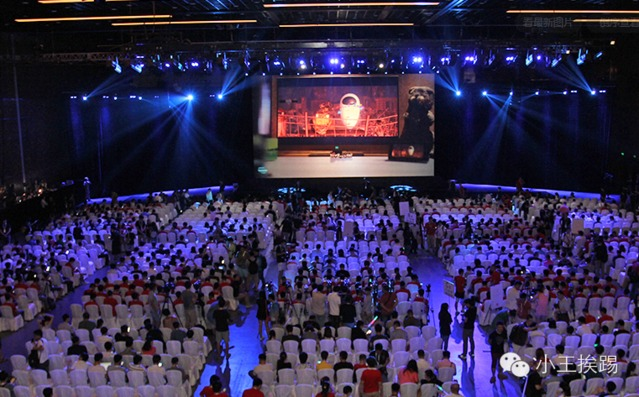

应个景来聊小米
by Zirui Wang posted on 2015/02/20 under 技术
今天下午2点，小米召开了名为“一块钢板的艺术之旅”的产品发布会。梓瑞今天也应个景，来跟大家聊聊我对小米新品的一些个人看法。想法浅薄，还望大家包涵。

今天下午2点，小米召开了名为“一块钢板的艺术之旅”的产品发布会。梓瑞今天也应个景，来跟大家聊聊我对小米新品的一些个人看法。想法浅薄，还望大家包涵。

掐指算来梓瑞快一周没有给小伙伴们送上文章了。今天，梓瑞给大家分享一下平面设计与网页设计所遵循视线流中的两种形式。希望能给小伙伴们带来些许帮助。